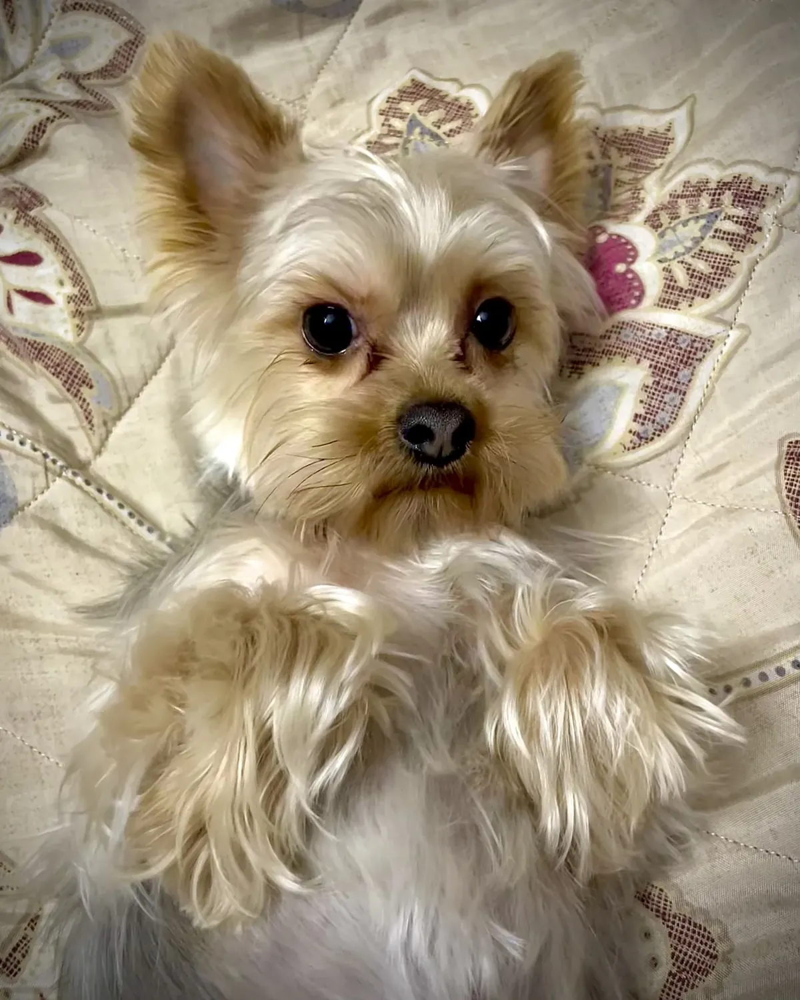
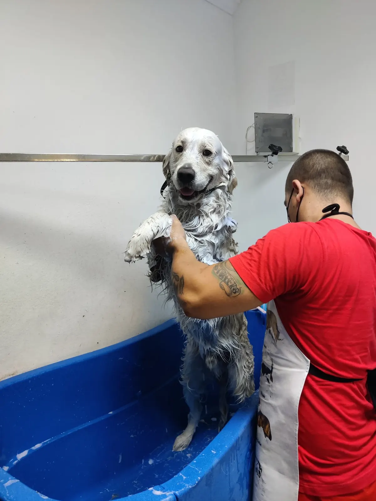
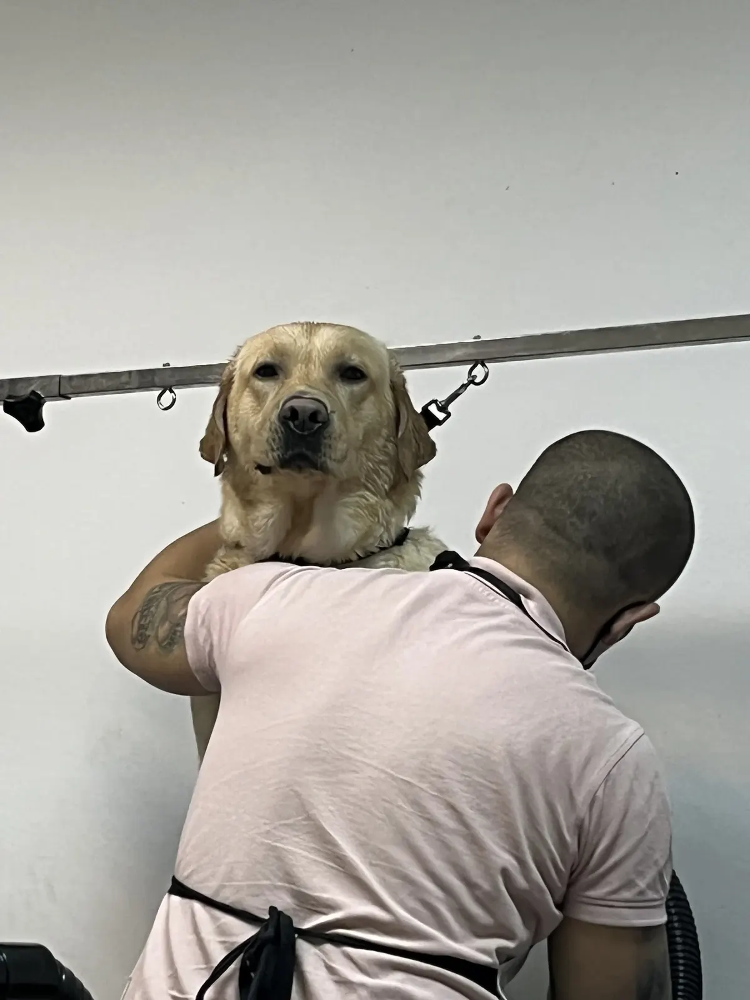
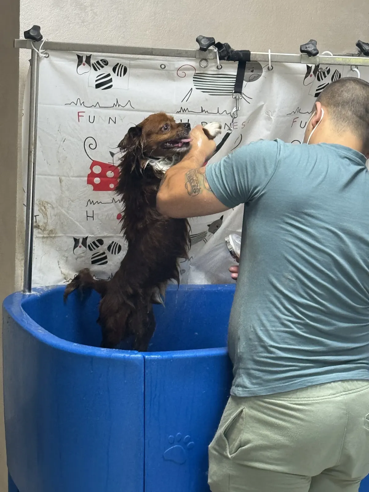
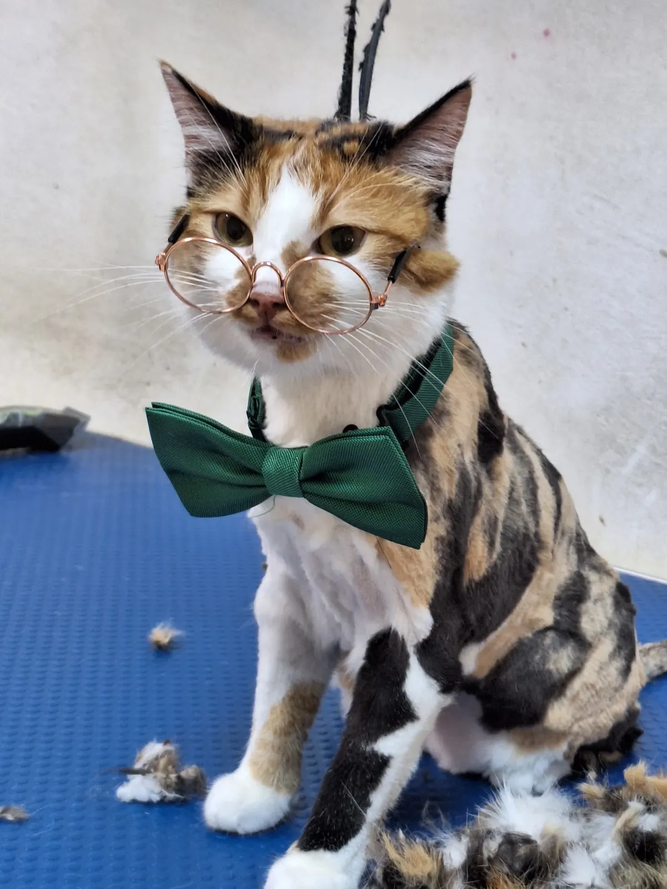
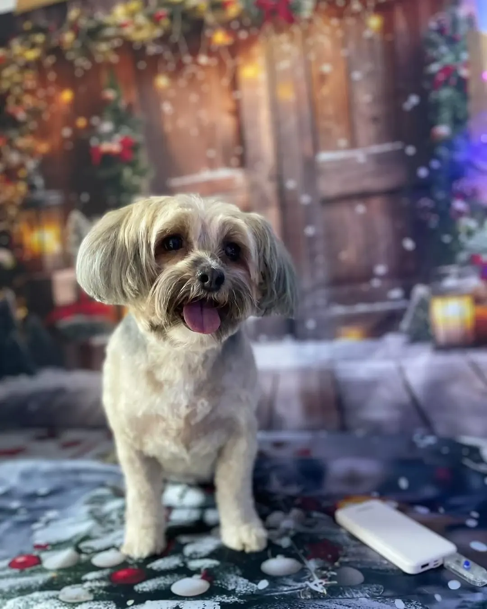
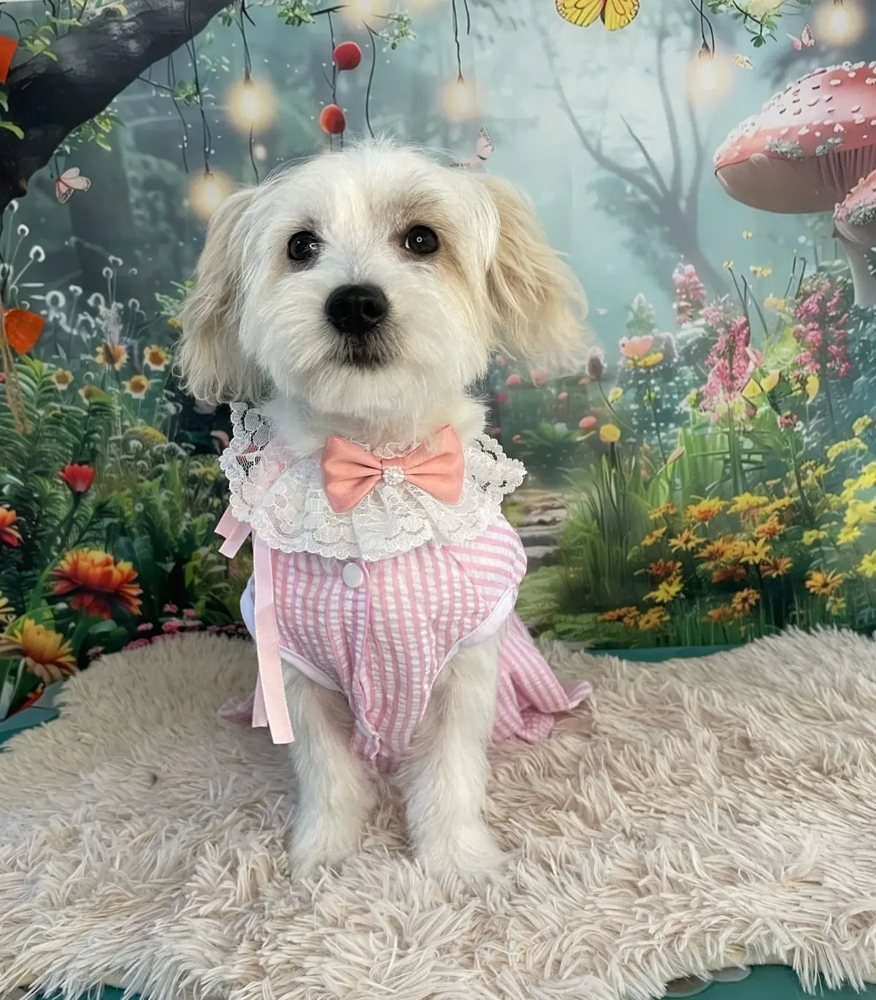
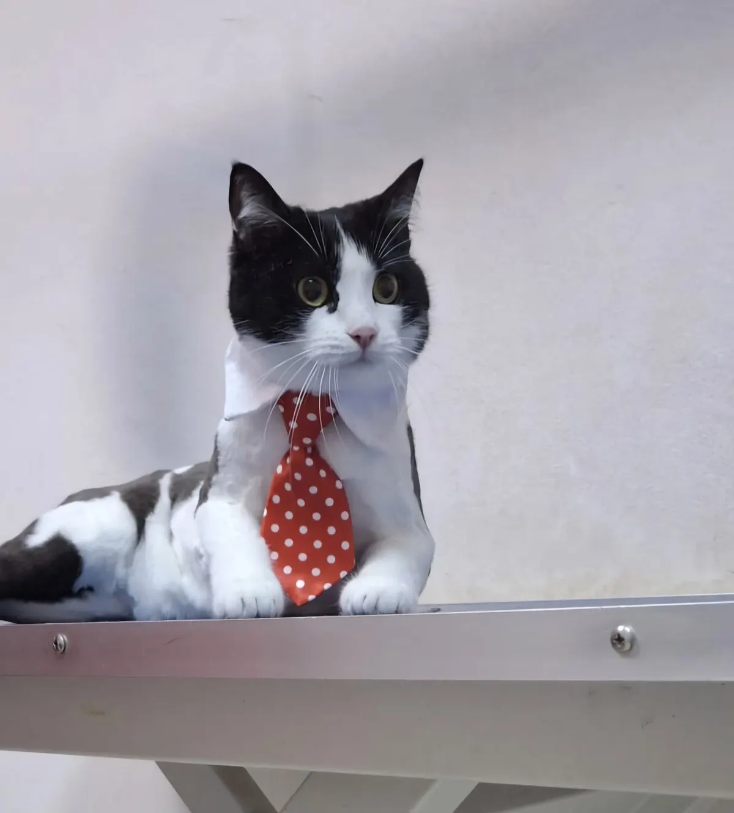
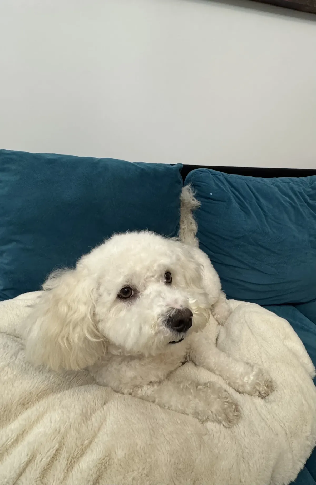
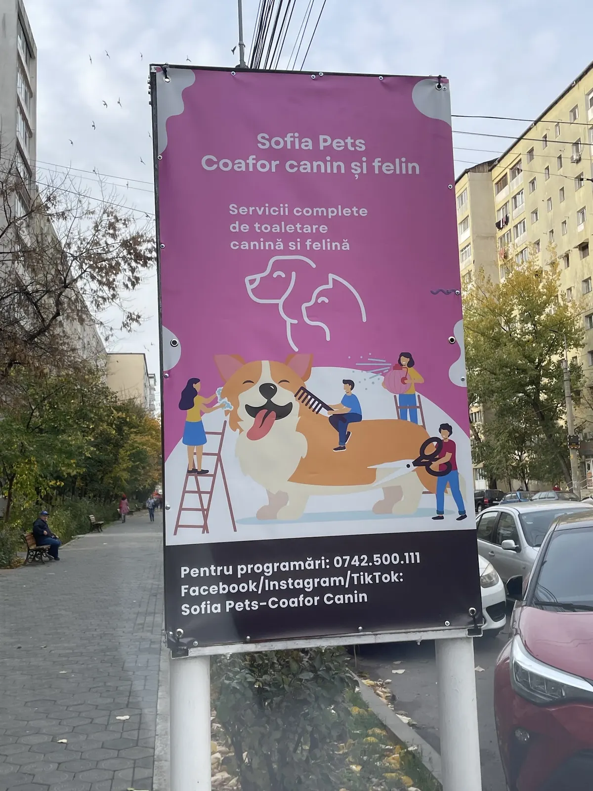

Câini
De la Yorkie la Golden. Spune-ne talia și cum e blana, iar noi îți spunem cât durează și cât costă.
talie micătalie medietalie mare
Coafor canin și felin · Iași
Baie, tuns și toaletare completă pentru câini și pisici, pe Bulevardul Alexandru cel Bun 37.
4,9 pe Google · 129 de recenzii
Cada albastră
Șampon, clătire, uscare și multă răbdare. Intră și câinii mari — un Golden sau un Labrador încap în cadă și ies zâmbind.

Golden, la baie
Labrador, în brațe
Blană lungă, ud leoarcăPe cine primim

De la Yorkie la Golden. Spune-ne talia și cum e blana, iar noi îți spunem cât durează și cât costă.

Baie și tuns pentru pisici, inclusiv tunsoarea „leu”: corp scurt, lăbuțe și coadă pufoase.
La final
Fundaluri tematice — de Crăciun, de primăvară — și accesorii pentru poza de la plecare.




4,9
Asta e nota pe care o dau stăpânii după ce își iau câinele (sau pisica) acasă. Noi ne uităm la ea ca la o promisiune pentru următoarea programare.

Cum ne găsești
Pe Bulevardul Alexandru cel Bun 37, la marginea trotuarului: un panou mov cu un corgi uriaș, tuns de patru oameni pe scări. Acolo suntem.
Programare
Câine sau pisică, talie, blană, ce vrei să-i facem. Mesajul de WhatsApp se scrie singur.
Servicii
Prețul depinde de talie, de blană și de cât de încâlcită e. Îl afli pe WhatsApp înainte să vii — fără surprize la plată.
Spălare cu șampon, clătire bună și uscare. Pentru blana care miroase a parc după ploaie.
Prețde confirmat
După standardul rasei sau după cum îl vrei tu: scurt de vară, pufos de iarnă, ochii la vedere.
Prețde confirmat
Baie și tuns în aceeași vizită. Îl lași zburlit, îl iei aranjat și parfumat.
Prețde confirmat
Baie și tuns pentru pisici, inclusiv tunsoarea „leu” — corp scurt, lăbuțe și coadă pufoase.
Prețde confirmat
Fundiță, papion sau cravată și un fundal tematic pentru poza de la plecare.
Prețde confirmat
Trimite-ne o poză cu el pe WhatsApp. Îți spunem ce i-ar prinde bine și cât ar dura.
Talia contează
Exemplele sunt orientative — dacă nu știi unde se încadrează, alege „nu știu” la programare.
De exemplu: Yorkie, Bichon, Maltez, Shih Tzu, Pomeranian.
preț de confirmatDe exemplu: Cocker, Beagle, Schnauzer, Bichon cu blană multă.
preț de confirmatDe exemplu: Golden Retriever, Labrador, Ciobănesc, Husky.
preț de confirmatÎnainte să vii
Programare pe WhatsApp
Bifezi câteva lucruri, iar mesajul se scrie singur. Ți-l confirmăm noi pe WhatsApp, cu ora exactă și prețul.
Salonul
Pe Alexandru cel Bun, între blocuri și magazinele de pe bulevard. Câini mici, câini mari, pisici — toți trec prin aceleași mâini.
Pe scurt
Galerie
Și câteva poze din timpul lucrului. Atinge o poză ca s-o vezi mare.
Vizită
Sună sau scrie-ne înainte — lucrăm pe programare, ca să nu aștepte nimeni cu lesa în mână.